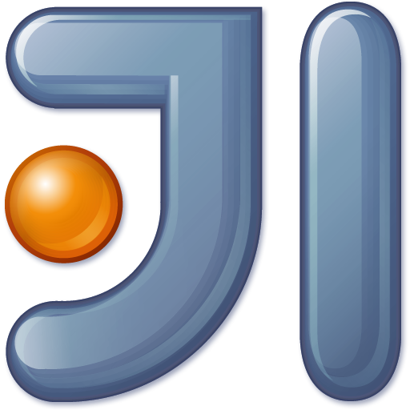
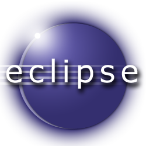
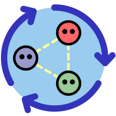

Sommaire
Année Univesitaire 2012/2013
Rapport de Stage
Implémentation de la Linked Data platform (RDF, WebID) dans le backend Scala de l'application web Stample
Formation
Master Web Intelligence
Université
Université de Jean Monnet Saint-Etienne
Par
Moncef BEN RAJEB
Ecadrants de Stage
Tuteur de stage : Henry STORY
Tuteur pédagogique : Professeur Pierre MARET
Remerciement
A écrire ...
Introduction
Au cours de mon premier année master Web Intelligence à l'université de Jean Monnêt Saint Etienne, noux devrions effectuer un stage d'une durée minimale trois mois à compter à partir de 18 mars.
Je me suis orienté grace à Monsieur Pierre Marret que je le remerci à travailler avec une Startup Stample pour écrire une version décentraliser de stample avec les nouvelles téchnologie du web sémantique et le langage de programmation fonctionnelle orienté object Scala afin de mettre en oeuvre une solution mondiale au probléme de centralisation, Stample est révolutionnaire.
Ce stage à été une bonne opportunité pour moi d'apprendre Scala, PlayFrameWork et de voir en proche la vie profesionnelle avec une Startup qui est notament differente d'une entreprise ainsi que d'apprendre la philosophie du web et de travailler avec un groupe très ambitieux.
J'ai décidé d'écrire mon rapport en HTML5 et de le mettre en ligne comme projet public open source afin d'interagir avec ce rapport comme étant un projet open source puis l'héberger sur un serveur pour avoir une visibilité plus grande de se que j'ai appris et aider les autres à apprendre plus vite. Ce qui permet à mes professeurs, mes collegues et mes amis de naviguer facilement pour voir le contenu du rapport et profiter de mes indexs disponible en ligne de plus me contacter pour des interrogations et ils peuvent accàder au source disponible sur mon compte GuitHub pour modifier ou me proposer des suggestions. Je recommande cette methode à tout informaticiens qui veux montrer ces talents en programmmant aussi le rapport du Stage.
Comme Romain Blin à déjà expliquer dans sa thése de premier année master l'année dérnier en proposant ça propre solution LifeShare dans le cadre d'un stage de recherche au laboratoire Télécom Claude Chappe. Je travaille avec Henry Story de mettre en place un Stample décentraliser. Il apparait normale de commencer mon rapport de stage par la présentation du Stample ensuite de décrire la solution actuelle centraliser de Stample et de décortiquer les différentes fonctionnalitès puis d'analyser les problémes, aprés je vais présenter Scala.
Présentation de Stample
brève description
Stample, premiere plateforme de réseau social distribué et sécurisé, redonne à chacun le contrôle exclusif de ses informations et améliore l'ergonomie de l'apprentissage, du travail individuel et de la collaboration.
Constat de départ
A l'ère de l'économie de la connaissance, de l'omniprésence des données, de leur circulation permanente sur l'internet, et en l'absence de mécanismes efficaces de restriction de leurs usages, nos informations personnelles, nos travaux, et de plus en plus de données nous concernant, sont captées, détournées et exploitées sans qu'aucun contrôle ne soit possible. Les enjeux critiques des individus, entreprises, institutions et états:
- Permettre à chaque partie prenante de reprendre le contrôle de leurs informations,
- Favoriser l'union et la coordination des intelligences autour d'objectifs communs.
Probléme
Il ya un besoin croissant d'un outil de partage sécurisé des connaissances numérique. Les gens perdent des heures chaque semaine en raison de la complexité croissante de leur vie numérique:
- Filtrage des e-mails et notifications non désirés,
- Créations et mises à jour de leurs profils sur de trop nombreux services isolés les uns des autres ,
- Récupération de mots de passe perdus ou volés ...
Et les choses empirent:
- L'information pertinente est de plus en plus difficile à extraire du déluge de données,
- La grande segmentation des outils rend l'organisation et la collaboration frustrante.
- Les modèles actuels de stockage centralisé de données posent de sérieux problèmes de confidentialité et de respect de la vie privée.
Solution
Stample propose une solution simple pour :
- Reprendre le contrôle de vos données personnelles, décider avec qui et comment elles peuvent être partagées,
- Améliorer l'ergonomie de l'apprentissage et du travail par la contextualisation avancée de l'information,
- Gérer son identité de façon autonome sur le Web social distribué,
- Collaborer avec son réseau de confiance en toute sécurité, sans centralisation, ni accès d'une tierce partie.
Concurrence
- Protocoles d'identification (Alternatives à WebID ): OpenID, OAUth, Infocard...
- Gestion de l'accès et de l'identité: CA Technologies, Ping identity, SailPoint, Garlik (owned by Experian)...
- Stockage en ligne: Dropbox, Box, Google Drive...
- Réseaux sociaux: Facebook, Tumblr, Pinterest, Instagram...
- Aggrégateurs et plateformes de blogs: WordPress, Twitter, Reddit, Scoop.it, Paper.li, Flipboard, Zite, Jolicloud...
- Réseaux sociaux professionnels: LinkedIn, Quora, Yammer, Podio...
- Outils de note et d'organisation d'informations: Evernote, SpringPad, Clipboard, Pearltrees, Kippt, Google Keep..
- Outils de partage des connaissances: Mendeley, Kno, Scribd, SlideShare, Issuu...
Hands On Scala
About Scala

Nom : Scala vient de "Scalable langage" Auteur : Martin Odersky Date de Création : 2003 Lieu : EPFL Ecole polytechnique fédérale de lausanne But : être élégant, concis, et d’être type-safe... Dans la communauté PSUG : Paris scala user groupe
Un langage Scalable/Adaptable
Description
Le nom Scala vient du besoin d'un langage Scalable multi-paradigme, son design lui permet de
grandir avec la demande des
utilisateurs.
Scala nous permet avec un petit script de construire des grandes systems.
C'est facile de travailler avec scala car il tourne sur la machine virtuelle java et il interagit
parfaitement avec toues les bibliothèques de java.
Techniquement, Scala est un mélange de concepts de programmation orientée objet et fonctionnelle dans un
langage typé statiquement.
La fusion de la programmation orientée objet et fonctionnelle se manifeste dans de nombreux aspects de la
Scala, il est probablement
plus répandue que dans toute autre langue largement utilisée. Les deux styles de programmation ont des
forces complémentaires quand
il s'agit de l'évolutivité. Constructions de programmation fonctionnels de Scala, il est facile de
construire des choses intéressantes
rapidement à partir de pièces simples. Ses constructions orientées objet, il est facile de structurer les
grands systèmes
et à les adapter aux nouvelles exigences. La combinaison des deux styles de Scala permet d'exprimer de
nouveaux types
de modèles de programmation et d'abstractions qui la composent. Elle conduit également à un lisibles et
style de programmation concise.
Et parce qu'il est tellement malléable, la programmation en Scala peut être beaucoup de plaisir.
Les outils
Apprentissage des concepts COURSEA
Principes de la programmation fonctionnelle en scala
Sur le site des cours en ligne coursera vous trouvez une
très bonne introduction sur la programmation fonctionnelle Scala assurer par
Martin Odersky, qui n'est moins que l'inventeur du langage Scala.
Le site avec un nombres aussi important d'inscrits, a rencontré un bon succés, révélateur de l'émulation de
ce langage.
J'ai suivi ce cours de 7 semaines dont je suis très satisfait deux parties un cours théorique en video
et des exercices partant toujours sur le contenu
du cours ainsi que des interrogations au cours durant le cours théorique.
Les vidéos des cours sont en anglais et relativement simples à comprendre en outre le professeur est un
excellent pédagologue.
les exercices permettent d'apprendre de plus en plus d'apprendre le raisonnement fonctionnel.
Et un systéme de notation quasi temps réel premet d'avoir un feedback rapide sur le travail.
Vous trouvez sur le site les detailles du cours ainsi que les exercices et des aides guide pour chaque
exercice dans l'Assignments.
Mes Remarques, mes attentions dans ces cours et ce que j'ai retenu
Hint : en java il y a que le call by value
Exercice disponible sur mon compte GitHub week3
Disponible sur mon GitHub week4
Disponible sur mon compte GitHub week6
Disponible sur week7
Ce cours ma permet clairement d'apprendre les notions de base de ce langage ma permis de programmer fonctionellement et scalablement , je recommande ce cours comme premier pas en scala ainsi que vers la fin de ce cours si vous avez bien fait les exercices durant les sept semaines vous aurez un certificat note X/80 :). Il reste cependant pleins de sujet à creuser :Les monads, akka, les Futures...
Il y'a aussi une serie d'exercice sur metanote mon compte GitHub proposer par paris scala user group que je vous invite à les faires.
A propos de coursera
une fois qu'on à toutes les outils sont bien installer sur notre machine pour programmer en scala est ça c'est bien expliquer sur le site on va recevoir chaque semaine des cours et des exercices, apres la resolution des exercices il est indisponsable de lancer les tests pour voir si notre solution répond bien au besion puis nous pouvons faire un submit pour avoir la note sur 10 de l'exercice comme ci-dessous
> submit monmail@Email.domaine monPWDdeSoumission [info] Packaging /Users/Moncef/Programming/Odersky/forcomp/target/scala-2.10/progfun-forcomp_2.10-1.0.0.jar ... [info] Done packaging. [info] Connecting to coursera. Obtaining challenge... [info] Computing challenge response... [info] Submitting solution... [success] Your code was successfully submitted: Your submission has been accepted and will be graded shortly. [success] Total time: 6 s, completed 1 mai 2013 12:08:53
Généralités
Présentations des concepts
Les Méthodes
La méthode Map
permet d'appliquer une fonction sur tout les éléments d'une liste
Exemple
scala> val list=List(4,5,6) list: List[Int] = List(4, 5, 6) scala> list map (_*2) res1: List[Int] = List(8, 10, 12)comme j'ai déja dit on peut écrire cet exemple autrement
scala> for(l<-list)yield(l*2) res2: List[Int] = List(8, 10, 12)La méthode flatten
scala> List(List('A','B'),List('C','D'),List('E','F')).flatten res3: List[Char] = List(A, B, C, D, E, F)La méthode flatMap
permet de combiner les deux méthodes précédentes
scala> List(1, 2, 3).flatMap(i => ((1 to i).toList)) res4: List[Int] = List(1, 1, 2, 1, 2, 3)plus de détaille
scala> List(1, 2, 3).map(i => (1 to i).toList) res5: List[List[Int]] = List(List(1), List(1, 2), List(1, 2, 3))scala> res1.flatten res6: List[Int] = List(1, 1, 2, 1, 2, 3)
Scala VS Java
class Person(CIN: Int, name:Int)
//un constructeur implicite associer à chaque class methode apply
class Person{
private int CIN ;
private String name;
public Person(int CIN,String name){
this.CIN=CIN ;
this.name=name ;
}
}
Person p=new Person(1223,"TOTO")
// class person avec un constructeur
case class Person(CIN:Int,name:String)
Trois écritures équivalantes
C'est vrai quand on s'habitut avec la programmation Scala en trouve que notre code java est très long, c'est magique ce langage de programmation haut niveau ;)
Programmation fonctionnelle
Higher order functions
C'est des fonctions qui prennent en paramêtre d'autres fonction ou dans le resultat est une fonctionExemple : une fonction apply qui prend une fonction f et une valeur v et applique la fonction f à v
def apply(f: Int => String, v: Int) = f(v)
object Test {
def main(args: Array[String]) {
println ("Apply method : " + apply("Zara", "gmail.com"));
println ("Unappy method : " + unapply("Zara@gmail.com"));
println ("Unappy method : " + unapply("Zara Ali"));
}
// The injection method (optional)
def apply(user: String, domain: String) = {
user +"@"+ domain
}
// The extraction method (mandatory)
def unapply(str: String): Option[(String, String)] = {
val parts = str split "@"
if (parts.length == 2){
Some(parts(0), parts(1))
}else{
None
}
}
}
Presentation des concepts clés
Scala hiérachie

Les classes definition
Les cases classes Definition
Un glissement progressive vers des cases classes
Une Classe à part entière
Val/Var
* val : -déclaration d'un attribut variable non modifiable en scala généralement en utilise des vals
-déclaration de parametre de classe : getter implicite
* var : -déclaration d'un attribut variable modifiable
-déclaration de parametre de classe : getter and setter implicite
type
en Scala on peut déclarer des types avec le mot type exemple type word :String type sentence :List[word]
Le path en scala peut être définie de la manière suivanteval directoryPath =List("dossier","fichier")
val path = directoryPath.mkString("/")
Les Traits
c'est comme les interfaces en Java sauf qu'on peut implimenter les methodes ; déclaration similaire a une classe avec la possibilité de l'héritage multiple et pas de parametre de classe si non une erreur de compilation
trait ImageInfo{
val image: Image
def ImageInfo :String = image.name
}
trait ComputeAvgScore
trait AnotherOne
class Image extends ImageInfo with ComuteAvgScore with AnotherOne{
val name="Sacha"
}
==>Le mot-clé sealed devant un trait facilite le pattern matching,un sealed trait peut être peut être prolonger
que
dans le même fichier que sa déclaration
Les collections
Les Lists
La classe List repose sur deux cases class
Exemple de fonctions : map, flatmap, flatten ...
Les Options
Les Options sont aussi des collections le type Option désigne une valeur Optionnelle
Option[A] :
->Some[A]
->None
L'intérêt de l'option
Imaginons qu'on cherche une personne dans un graphe RDF
def findImage(CIN :Int)=Option[Image]
Le pattern matching
une notion très improtante dans Scala peut être assimilé au switch case en Java
v match{case p1=>v1 ... pn=>vn}
pi représente les patterns et vi la valeur renvoyée dans le cas ou le pi match v
Erreur de matching est renvoyée si on a besoin
Exemple :
def anyThing(x:Any) = x match{
case 5 =>"Int"
case true=>"Boolean"
case "hello"=>"String"
case Nil => "Empty List"
case _ => "Something else"
}
Vous trouvez ci-dessous un exemple de fonction produit scalaire ecrite en Scala
def produitScalaire(xs:Vector[Double],ys:Vector[Double]):Double={
(xs zip ys).map(xy=>xy._1*xy._2).sum
}
//> produitScalaire: (xs: Vector[Double], ys: Vector[Double])Double
produitScalaire(Vector(1,3,4),Vector(2,2,2)) //> res8: Double = 16.0
//With pattern matching
def produitScalaire2(xs:Vector[Double],ys:Vector[Double]):Double={
(xs zip ys).map{case(x,y)=>x*y}.sum
}
//> produitScalaire2: (xs: Vector[Double], ys: Vector[Double])Double
produitScalaire2(Vector(1,3,4),Vector(2,2,2)) //> res9: Double = 16.0
//produit scalaire version avec for
def produitScalaireFor(xs:List[Double],ys:List[Double]):Double=
(for((x,y) <- xs zip ys )yield (x*y)).sum
//> produitScalaireFor: (xs: List[Double], ys: List[Double])Double
produitScalaireFor(List(1,3,4),List(2,2,2)) //> res8: Double = 16.0
Exemple Generer des pairs
Avec map vecteur de vecteurs
val n=7
//> n : Int = 7
((1 until n) map (i=>
(1 until i) map (j =>(i,j))))
//> res11: scala.collection.immutable.IndexedSeq[scala.collection.immutable.Ind
//| exedSeq[(Int, Int)]] = Vector(Vector(), Vector((2,1)), Vector((3,1), (3,2))
//| , Vector((4,1), (4,2), (4,3)), Vector((5,1), (5,2), (5,3), (5,4)), Vector((
//| 6,1), (6,2), (6,3), (6,4), (6,5)))
En applique flatten pour avoir un seul vecteur des pairs
((1 until n) map (i=>
(1 until i) map (j =>(i,j)))).flatten
//> res11: scala.collection.immutable.IndexedSeq[(Int, Int)] = Vector((2,1), (3
//| ,1), (3,2), (4,1), (4,2), (4,3), (5,1), (5,2), (5,3), (5,4), (6,1), (6,2),
//| (6,3), (6,4), (6,5))
La même chose en applique un flatMap au lieu de map flatten
((1 until n) flatMap (i=>(1 until i) map (j =>(i,j))))
//> res11: scala.collection.immutable.IndexedSeq[(Int, Int)] = Vector((2,1), (3
//| ,1), (3,2), (4,1), (4,2), (4,3), (5,1), (5,2), (5,3), (5,4), (6,1), (6,2),
//| (6,3), (6,4), (6,5))
On applique un filtre pour avoir que les pairs des nombres premiers :
def isPrime(x:Int):Boolean= (2 until x) forall (p=>x%p!=0)
//> isPrime: (x: Int)Boolean
((1 until n) flatMap (i=>
(1 until i) map (j =>(i,j)))) filter(pair=> isPrime(pair._1+pair._2))
//> res11: scala.collection.immutable.IndexedSeq[(Int, Int)] = Vector((2,1), (3,2), (4,1), (4,3), (5,2), (6,1), (6,5))
For Loop expression
case class Person(nom :String,age:Int)
pour avoir les personnes qui ont plus que 20 ans
for (p <- persons if p.age>20 )yield(p.nom)
equivalant à
persons filter(p=>p.age>20)map(p=>p.nom)
L'expression for est similaire à Loop dans les langages iterative sauf qu'elle construit
une list de resultats de tout les Iterators
For expression dans scala produit toujours un nouveau résultat les deux expressions
sont equivalantes mais la premiere elle est plus facile a lire.
About case class
Case classes can be pattern matched,
Case classes automatically define hashcode and equals,
Case classes automatically define getter methods for the constructor arguments.
About variance
les caractère + [+T] signifie que la flexibilité des paramètres d'entrées List[+A] le + devant le paramètre A veut dire que pour tout type X et Y si X est sous-type de Y =>List[X] est un sous-type de List[Y] les listes sont immutable mais nous n'avons pas besoin de copier le contenu de la liste on peut le réutiliser => propriété de data sharing on dit que data functional est persistent c'est a dire que les references ne change plus avec les opérations sur les données eq pour les references des objets x eq y == pour l'égalite des valeurs x ==y trait Function[-T,+U] T contravariant U covariant Il y a deux principal forme de polymorphisme : -Subtyping -genericsType Bound
upper bound [S <: IntSet] veut dire que S peut être instantiated seulement du types qui conforme avec IntSetS <: T: S est un soustype de T
S >: T : S est un super type de T
Les Monades
Dans la programmation fonctionnelle Il y'a un concept général appelé monad, ce qui
peut expliquer un grand nombre de types avec Computa-tions,
allant de collections, à des calculs avec l'Etat et I / O, les calculs de retour de suivi, et les opérations, pour
n'en nommer que quelques-uns.
Vous pouvez formuler des fonctions, flatMap et withFilter sur une monade.
En outre, vous pouvez caractériser
chaque
monad par map, flatMap et withFilter plus un constructeur de type "unit" qui produit une monade d'une valeur
d'élément.
Des détailles
the striMargin avec un pipe au début de la phrase on peut faire des /n similaire au prog
java
SBT new-host:objsets Moncef$ mkdir ~/.sbt/plugins
new-host:objsets Moncef$ vi ~/.sbt/plugins/build.sbt
±±
sbt
gen-idea sbt-classifiers
=> 0 until 10 == Range(0,10) == 0 to 9
equivalent .
dans scala les constructeur n'ont pas une définition concrète une définition implicite de upplay and unapply
dans scala hight order function des fonction qui prennent en paramètre des autres fonctions…
Sealed class ne peut pas avoir un nouveau sous class que celui dans le même fichier.
un langage purement orienter objet c'est a dire chaque valeur est un objet
si le langage est basé sur les classes => le type de chaque valeur est une classe
if (cond) te else ee
cond.ifThenElse(te,ee)
Variance
List (immutable) covariant /Array(mutable) non covariant
Pattern matching is a generalization switch form C/Java to class hierarchies
en utilise en scala match pour l'exprimer
What do pattern Match :
construct pattern c(p1… pn) match tous les valeurs de type c qui sont construit au arguments
variable pattern x match n'import quel valeur
constant pattern c matches values equals to c dans le sens de == equals
immutable collection utiliser dans les programmes purement fonctionnels
Scala ne vous permet pas de programmer imperativement mais quand vous serez plus confortable avec Scala vous aimerez la façon fonctionnelle
de programmation ce style de programmation est plus efficace
par exemple une façon plus concis d'ecrire la boucle for pour imprimer des agruments :
val args=List("aa","bb","cc")
args.foreach(arg => println(arg))
une autre façon de l'ecrire plus abstract mais plus elegonte
args.foreach(println)
resultat:
aa
bb
cc
une façon d'ecriture du boucle for :
for(i<-1 to 3)
println("iteration "+i)
=>résultat :
iteration 1
iteration 2
iteration 3
Scala au milieu professionnel
Il y a plusieurs compagnie qui ont fait une migration sur Scala parmis ces compagnies :
- viadeo ...
Livres de Scala
Outils de développements
IntelliJ IDEA est un IDE Java commercial développé par JetBrains. Il est fréquemment appelé par le simple nom d’« IntelliJ ».
IntelliJ est un bon IDE dont j'ai travaillé pour faire le site du rapport en HTML5
Eclipse est un projet, décliné et organisé en un ensemble de sous-projets de développements logiciels, de la Fondation Eclipse visant à développer un environnement de production de logiciels libres qui soit extensible, universel et polyvalent.
J'ai utilisé Eclipse avec le plagin de scala pour faire les exercices de Odersky ainsi que pour travailler sur le projet Stample
GitHub
Pourquoi Git ?Si vous avez déjà travaillé sur un projet informatique, que ce soit un petit projet personnel ou un plus gros projet professionnel, vous avez certainement déjà rencontré un de ces problèmes :
Vous voyez il y'a plusieurs raisons pour lesquelles j'ai décidé d'écrire mon rapport de stage en html5 ;)
GitHub c'est un site qui vous permet d'héberger vos projets avec git et qui vous permet de gérer d'une manier visuelle les collaborateurs et les modifications le principale interret de ce site qu'il est gratuit pour les projets open source et même pour les projet privé il est relativement intéressant au niveau tarif c'est aussi bas. [Site de Zéro]
Hint :Il existe de nombreux logiciels de gestion de versions, comme SVN (Subversion), Mercurial et Git. Je vous présente Git (prononcez « guite ») qui est un des plus puissants logiciels de ce genre. Nous l’utilisons notamment pour gérer le code source du Stample !
Introduction PlayFramework
Play c'est un FrameWork high-productivity Scala Java web application qui intègre les composantes et l'API dont vous
avez besion
pour le développement moderne de l'application web.
Play est basé sur un architecture légère, Web convivial et dispose consommation de ressources prévisibles et minimes
(CPU, mémoire, threads)
pour les applications hautement évolutives grâce à son modèle réactif, basé sur Iteratee IO.
Il suffit de suivre les démarches pour telecharger et changer le path pour tavailler avec PlayFramework
Pour faire une premier application Scala/Java avec play vous trouvez sur le site les démarches necessaire ainsi que
tout les détailles.
Hint : On peut parler dans cette partie d'une petite application de débutant même principe que Twitter en Scala/PlayFramework disponible sur mon compte GitHub sur Ici
MongoDB
Pour notre première version de Stample centraliser on utilise MongoDB pour la gestion de notre base de donnée orienté document, scalable. Il y'a une présentation de MongoDB sur slideshare que vous trouvez ci-dessous.
démarche pour installation de MongoDB on peut utiliser la ligne de commande shell ==> téléchargement de mongo pour mac puis la configuration en utilisant shell cd bin puis sudo data/db et sudo chmod 777 pour les droits d'accéesStartUp
Étymologie
Le mot startup (ou start-up) est un mot anglophone d'origine américaine, diminutif de startup company.
Il est composé de start (commencer en français) et up, notion de hauteur, d'élévation.
Il s'agit donc littéralement d'une « société qui démarre ». L'expression française pour l'expression anglaise est «
jeune pousse »
Définition
La startup est une jeune entreprise à fort potentiel de croissance et qui fait la plupart du temps l'objet de levée
de fonds. On parle également de startup pour des entreprises en construction qui ne se sont pas encore lancées sur
le marché commercial (ou seulement à titre expérimental). Elle est en phase plus ou moins longue de développement
d'un produit,
de test d'une idée, de validation d'une technologie ou d'un modèle économique...
le risque d'échec est décuplé par rapport à des entreprises traditionnelles.
Lorsqu'on parle d'une Startup on pense toujours à des investisseurs, des risques et des nouvelles idées...
On trouve le plus grand nombre des Startups dans le monde de l'informatique au Silicone Valley (États-Unis) dont on
utilise maintenant les
géants google, facebook, twitter, Yahoo...
OuiShare
Nous avons participer au ouiShare à paris pour présenter Stample samedi "4" et dimanche "5 mai" j'ai assité à des présentations de plusieurs startup, Henry à présenter webID et le format RDF nous avons fait un petit exercice Sacha à présenter Stample. C'est une bonne opportunité pour rencontrer des développeurs et voir les nouvelles idées.
Linked Data
D'après l'article de Tim Berners Lee : "Le linked data n'est pas seulement de mettre des données sur le net, c'est aussi mettre les données de façon qu'une machine ou un être humain
puisse comprendre à quelle concept est lié cette donnée".
C'est exactement ça la force du web semantic le web intelligent.
Je reprend ce que Romain à déjà expliquer dans son rapport l'année dernier, les 4 régles à respecter sont:
- Identifier les objets avec des URI : Chaque objet fait référence à un concept doit posséder un URI public accessible à tous.
- Utiliser des URI HTTP : Car l'utilisation d'autres URI tel que URI "file://" entrînereaient des problémes si un client autre que celui qui à déposer la ressource utlise cette URI
- Utiliser des Ontologies bien précises pour se servir de d'information contre l'URI : Lors de la saisie d'une URI, celle-ci doit répondre en donnant toujours une information.
- Déposer les liens ailleurs : Développer une sorte de nappe de données permettant de trouver toutes sorte de choses relatives à toutes sortes de concept.
Hint : Ces régles premettent d'établir des liens universels entre les documents présenter sur la toile.
Les Ontologies
Une ontologie est l'ensemble structuré des termes et concepts représentant le sens d'un champ d'informations, que ce soit par les métadonnées d'un espace de noms, ou les éléments d'un domaine de connaissances. L'ontologie constitue en soi un modèle de données représentatif d'un ensemble de concepts dans un domaine, ainsi que des relations entre ces concepts. Elle est employée pour raisonner à propos des objets du domaine concerné. Plus simplement, on peut aussi dire que l'« ontologie est aux données ce que la grammaire est au langage ». [wikipédia]
FOAF "Friend of a Friend"/"Ami d'un ami"
Ce vocabulaire RDF permet de permettant de décrire des personnes et les relations qu'elles entetiennent entre elles, c'est un vocabulaire trés connu dans le monde
du web sémantique permettant de décrire le concept de personne de manière ouverte.
Exemple de déscription d'une personne vocabulaire FOAF [Livre the social semantic web]:
<https://www.johonbreslin.com/foaf/foaf.rdf#me> //la personne est identifier par un URI
a foaf Person; //la personne est un foaf:person qui contient les proprietes suivante :
foaf:name "John Berslin"; //nom complet du person
foaf:mbox <mailto:johnbreslin@deri.org>; //son adress mail
foaf:homepage <http://www.johnberslin.com/>; //sa page d'acceuil
foaf:nick "cloud"; //son pseudo
foaf:topic_interest: <http://dbpedia.org>; //le site dont il s'interesse
foaf:knows[ //ces connaissances
a foaf :Person;
foaf:name "Sheil Kinsella";
foaf:mbox <mailto:sheila.kinsella@deri.org;
];
foaf:knows[
a foaf :Person;
foaf:name "Hak-lae Kim";
foaf:mbox <mailto:haklae.kim@deri.org;
].
SIOC Semantically Interlinked Online Communities
C'est un vocabulaire RDF permettant de décrire des objets couramment utilisé sur des sites communautaires et leurs relations. Il permet l'intégration d'une manière sémantique d'un flux social.
Turtle Terse RDF triple Language
Un langage qui permet de une sérialisation non-XML des modéles RDF. C'est un sous-ensemble de Notation3
OpenID WebID
Des protocoles d'authentifications WebID utilise le Linked Data pour l'authentification contrairement à OpenID, WebID manipule directement les profiles foaf et l'authentification par certificat SSL(secure sockets layer) un protocole de sécurisation des échanges sur internet.
SPARQL
C'est un langage de requêtes pour manipuler les graphes RDF, de plus il est possible d'effectuer des tâches multiple sur le même concept au même temps. C'est un langage relativement proche de SQL permet une gestion simple des graphes RDF.
Apports Personnels
Durant ces trois mois de stage qui continuera jusqu'a Septembre, j'ai appri plusieurs concept de scala et de Linked Data la philosophie du web sémantique et d'écrire des tests. Ce stage est une opportunité unique qui va me permettre de commancer ma deuxième année de master très alaise, vu qu'il touche vraiment ma spècialité le web intelligence. Le travaille avec les nouvelles technologie de l'informatique PlayFramework, scala, webID va renforcé mes connaissances et améliorer mon savoir faire. Un stage chez une StartUp ma apporter aussi beaucoup de choses la voulanter, la patience, et tout un vocabulaire d'investisseur, lever de fond...
Contactez moi !
Des interrogations, un projet... ?
N'hésitez pas, je suis socialble ^_^
A propos de moi !
Je suis un étudiant en master web intelligence à l'université
de Jean Monnêt saint-etienne.
Je viens d'apprendre scala dans le cadre de mon stage premier année master au sein du Startup Stample.
Je trouve que ce langage de programmation avancé (Scala) est le future langage dont je recommande tout
développeur interesser sur mon site.
En effet il est beaucoup plus scalable, on peut dans 3 ligne de
codes
faire ce qui demande 10 lignes de code Java.
Notre projet Stample est de faire un réseau sociale distribuer qui répond au besoin de tout type
d'utilisateurs qui n'ont pas consiance du danger
de centralisation des données qui peuvent être fatale add arguments++
Notre solution est developpé sur PlayFrameWork, Scala comme langage de programmation, MongoDB version centraliser puis RDF version distribier
nous somme une startup et nous profitant des
nouvelles technologies pour avoir une solution fiable.